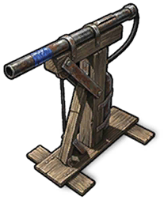

Строительство
Предметы · СтроительствоЛовушка из дробовика
Gun Trap

Gun Trap / СтроительствоРецепт изготовления
Рецепт изготовленияЗа одно изготовление получается 1 шт. Ниже указаны материалы на одно изготовление.
 МеталлоломScrap
×20→
МеталлоломScrap
×20→
 ДревесинаWood
×25→
ДревесинаWood
×25→
 ШестерниGears
×2→
ШестерниGears
×2→
 Металлические фрагментыMetal Fragment
×60→
Металлические фрагментыMetal Fragment
×60→Результат переработки
Результат переработкиОписание предмета
Реагирует на движение. Заряжается дробью.